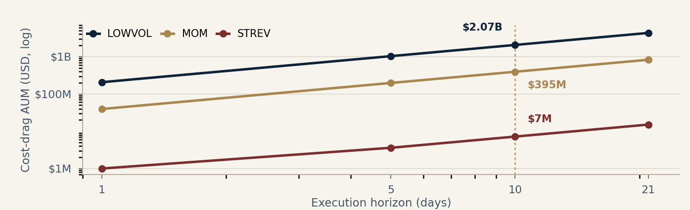

The question
Can a price-based fragility measure add information about a factor’s
left tail beyond volatility — and at what size does implementation
cost dominate the premium?
Crowding is a latent property of other investors’ positions; it cannot be
observed directly in prices. Two constructs can be measured: the fragility of
the portfolio the factor implies, and the capital at which trading costs become
material. The empirical test is deliberately adversarial: any fragility overlay
must beat a volatility-managed portfolio at the same average exposure.
What the evidence shows
1
The predecessor’s headline was the class base rate.
A prior version reported an F1 of 0.9483. Its “value” and
“momentum” factors were the same portfolio up to sign, and the score
equalled a constant predictor at a 90.2% base rate. The audit is
included as a reproducible case study in metric and leakage failure.
2
Fragility does not add a detectable level effect beyond volatility.
Primary coefficient: −0.98% per SD (95% CI −2.19% to +0.27%);
MDE 1.69%. Uncontrolled: −2.38%; with full controls: −0.98%.
H2 retention is 0.41, below the stated 0.50 threshold. The
composite is about 40% correlated with realized volatility.
3
The fragility overlay loses to volatility management.
True 5% expected-shortfall differences of
−1.20, −0.98, and −0.62 pp/week for MOM,
STREV, and LOWVOL; every bootstrap interval excludes zero. The overlay
still beats 86–98% of random exposure paths, so the signal is not
pure noise — it is weaker than volatility targeting.
4
Capacity is a surface, not a point estimate.
At a 100bp annual cost-drag hurdle and a 10-day horizon:
LOWVOL $2.07B, MOM $395M, STREV $7M. MOM ranges
from $39M at 1 day to $829M at 21 days. The ordering is a
turnover identity; the level is the interpretable quantity.
Capacity surface · cost-drag AUM at 100bp

Baseline: 10-day execution horizon, c = 0.314, 3bp spread. The level moves roughly 21x from 1 to 21 days; the ordering follows turnover by construction.